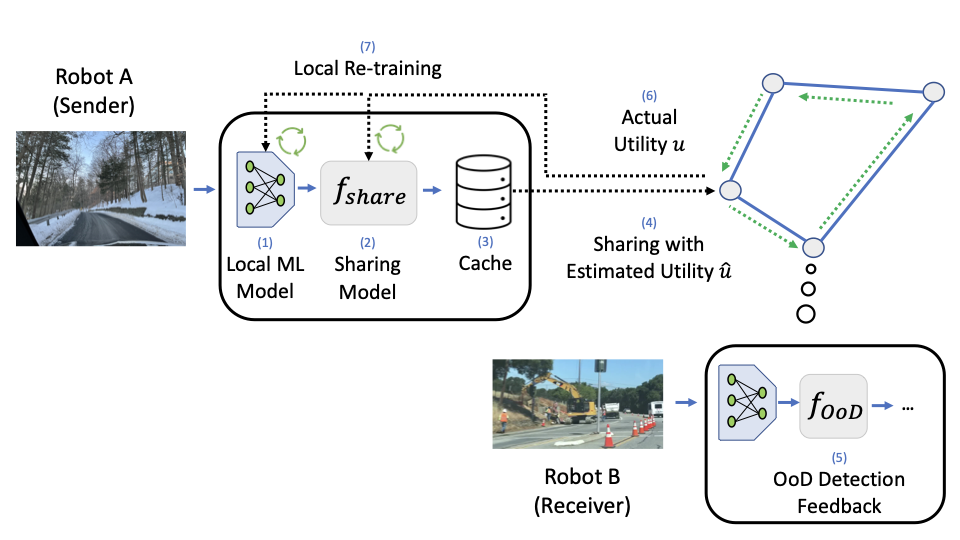

Toy experiment: learned data valuation rapidly improves model accuracy across sharing rounds, outperforming random sharing and approaching an oracle upper bound.
|
Decentralized Sharing and Valuation of Fleet Robotic Data Yuchong Geng1 Dongyue Zhang1 Po-han Li2 Oguzhan Akcin2 Ao Tang1 Sandeep P. Chinchali2 1Cornell University 2The University of Texas at Austin TL;DR: Robots deployed across different environments observe very different data. We propose a decentralized, privacy-aware framework in which robots learn to predict which local experiences are valuable to other robots in the fleet, selectively share only a small fraction of that data, and improve learning through peer feedback. |
|
 Decentralized sharing: robots predict which local experiences are valuable to peers, share selectively under privacy constraints, and use feedback to improve. |
Robotic fleets deployed across cities, homes, and roads experience highly heterogeneous environments. Conditions that are rare and safety-critical for one robot (e.g., snow, unusual traffic patterns, or construction zones) may be commonplace for another. Aggregating all sensory data centrally is costly, slow, and often infeasible due to bandwidth, privacy, and organizational constraints.
We propose a decentralized, peer-to-peer framework that enables robots to proactively share only the most valuable local experiences with their peers. Each robot learns a global utility (GU) sharing model that predicts how useful each observation will be to other robots, rather than relying on centralized coordination. A local privacy filter limits sensitive content, and peers provide feedback (e.g., out-of-distribution signals) that improves valuation and sharing over time.
In each round, a robot evaluates local observations using its GU model to predict their utility to peers, shares only the top-ranked subset after privacy filtering, and receives feedback that improves future valuation.
|
Toy experiment: learned data valuation rapidly improves model accuracy across sharing rounds, outperforming random sharing and approaching an oracle upper bound. |
Modern robotic fleets, including autonomous vehicles, are deployed across diverse cities and environments. Rare but safety-critical conditions such as snow, unusual road layouts, and long-tail edge cases are unevenly distributed across the fleet.
This work anticipates the need for decentralized mechanisms that allow robots to discover, value, and exchange such experiences efficiently without centralized data aggregation. As large-scale robot deployments accelerate, selective and privacy-aware data sharing becomes a key bottleneck for continual learning at scale.
Data valuation: how should we fairly price data contributions in a decentralized fleet?
Privacy-utility trade-offs: how can robots share useful data while protecting sensitive information?
Convergence: when does the sharing protocol reach a steady state across peers?
Discovery at scale: can robots quickly find peers likely to have valuable data?
@InProceedings{pmlr-v164-geng22a,
title = {Decentralized Sharing and Valuation of Fleet Robotic Data},
author = {Geng, Yuchong and Zhang, Dongyue and Li, Po-han and Akcin, Oguzhan and Tang, Ao and Chinchali, Sandeep P.},
booktitle = {Proceedings of the 5th Conference on Robot Learning},
pages = {1795--1800},
year = {2022},
editor = {Faust, Aleksandra and Hsu, David and Neumann, Gerhard},
volume = {164},
series = {Proceedings of Machine Learning Research},
month = {08--11 Nov},
publisher = {PMLR},
pdf = {https://proceedings.mlr.press/v164/geng22a/geng22a.pdf},
url = {https://proceedings.mlr.press/v164/geng22a.html}
}
Questions? Email yg534@cornell.edu or sandeepc@utexas.edu.